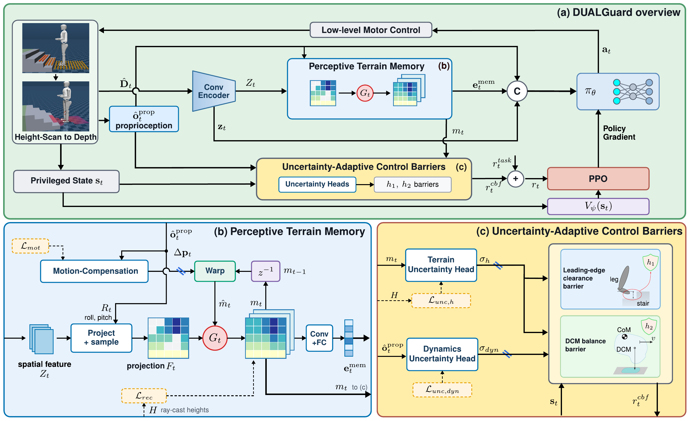

Submitted to ICRA 2027
Perceptive locomotion for humanoids must remain safe under uncertainty in both terrain perception and payload. Domain randomization can improve robustness but provides no explicit measure of when the policy's estimate is unreliable, while existing CBF approaches typically apply fixed safety margins. We introduce DUALGuard, which adapts discrete-time CBF margins online by leveraging the discrepancy between the privileged critic state and the policy's onboard estimate, within a single asymmetric actor-critic framework that requires no post-training distillation. The uncertainty signal is decoupled from policy learning through a stop-gradient and tightens foothold and clearance margins under uncertain terrain perception and balance margins under unknown payloads. A persistent terrain belief further combines depth observations with a motion-compensated prior to remain robust to occlusion. In simulation, DUALGuard achieves over 93% stair-traversal success across in-distribution stair levels, even with an out-of-distribution 20 kg payload, and 83.8% on unseen stair geometry under the same load. We further demonstrate zero-shot sim-to-real transfer on a full-scale humanoid, including successful stress tests with payloads up to 20 kg.

One-stage training
The policy is trained in a single stage using an asymmetric actor–critic framework with privileged training information, without requiring a separate distillation phase.
Terrain memory
Fuses new depth observations with a motion-compensated prior, preserving terrain information through occlusions.
Uncertainty sets the margin
Terrain and payload uncertainty adapt barrier decay rates for stair clearance and balance, shaping safer behavior through training rewards.
Stair ascent: free-moving vs. carrying a payload, side by side. The onboard depth scan (red points) and the foothold/swing-trace overlay are drawn live as the robot walks; each foothold lands well inside the tread, consistent with the landing-foothold-reachability barrier.
Stair descent: free-moving vs. carrying a payload, side by side. Same overlay, viewed from the front as the robot descends the staircase.
| Level | Riser (cm) |
Tread (cm) |
with DUALGuard | without DUALGuard | ||||||||
|---|---|---|---|---|---|---|---|---|---|---|---|---|
| 0 | 2 | 5 | 10 | 20 | 0 | 2 | 5 | 10 | 20 | |||
| L1 | 8–12 | 30 | 99.7 | 99.7 | 99.5 | 99.6 | 95.7 | 93.4 | 92.9 | 93.2 | 92.8 | 88.2 |
| L2 | 12–18 | 30 | 99.0 | 99.2 | 99.4 | 99.4 | 97.9 | 88.0 | 88.4 | 88.0 | 86.9 | 83.4 |
| L3 | 19–24 | 30 | 97.5 | 97.7 | 97.0 | 97.2 | 97.0 | 83.5 | 82.8 | 80.8 | 77.9 | 73.9 |
| OOD | 25–27 | 25 | 93.8 | 90.0 | 89.7 | 87.2 | 83.8 | 34.1 | 42.5 | 42.8 | 34.4 | 9.1 |
| All | — | 97.5 | 96.7 | 96.4 | 95.9 | 93.6 | 74.8 | 76.7 | 76.2 | 73.0 | 63.7 | |
Stair-traversal success rate (%) by difficulty level and payload mass (kg). L1–L3 span the riser/tread combinations seen during training; OOD (out-of-distribution) uses a riser height and tread depth never seen in training. Across all levels, DUALGuard maintains 97.5% success without a payload and 93.6% with the 20 kg stress-test payload, compared with 74.8% and 63.7% for a task-matched, end-to-end depth-encoder baseline trained without DUALGuard. On unseen stairs, at 20 kg, DUALGuard reaches 83.8% success on OOD geometry, whereas the baseline falls to 9.1%.
Free-moving
10 kg payload
10 kg payload / covers removed
20 kg payload (2× training config)
@unpublished{dualguard2026,
title = {DUALGuard: A Discrepancy-driven Uncertainty-Adaptive Locomotion Framework to Guard Humanoids During Stair Walking},
author = {Anonymous},
year = {2026}
}